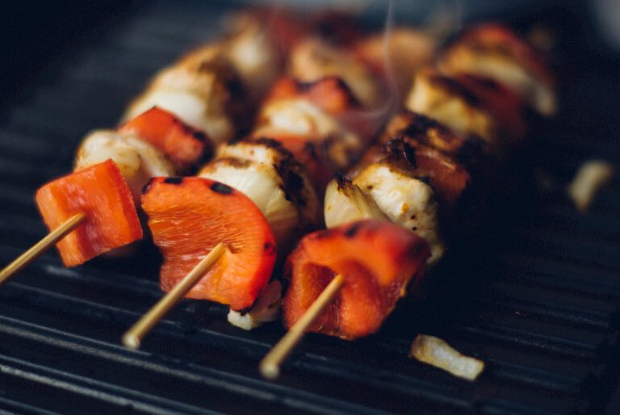

Grilled skewers
======================
### Ingredients
* 3 cloves of garlic
* 200g kefalotyri cheese
* 2 medium aubergine
* 1 iceberg lettuce
* 1 tablespoon coriander seeds
* 2 teaspoons dried oregano
* 2 lemons
* 4 tablespoons olive oil
* 600g lamb neck fillet , in 2cm chunks
* 12 fresh bay leaves
### Instructions
1. Peel and crush the garlic.
2. Chop the cheese into bite-sized pieces, trim and chop the aubergines into 2cm chunks, and trim and finely slice the lettuce.
3. Finely crush the coriander seeds in a pestle and mortar and add to a large bowl with the oregano and garlic. Finely grate in the lemon zest (reserve the zested lemons) and stir in the oil.
4. Season, then add the cheese, lamb, aubergines and bay leaves. Leave to marinate for at least an hour, or overnight if you can.
5. Meanwhile, pickle your cabbage. Trim, core and finely slice the cabbage, then place in a colander in the sink or over a bowl and toss with 2 teaspoons of sea salt. Cover and set aside for at least 2 hours, then rinse.
6. Peel and finely slice the onions, then transfer to a bowl along with the cabbage.
7. Put the remaining ingredients in a pan and bring to a boil. Simmer for 10 minutes, then pour over the cabbage and onions. Transfer to sterilised jars – this will keep for up to 1 month.
8. For the flatbreads, put the flour, baking powder, buttermilk and half of the sesame seeds in a bowl and mix until everything is combined.
9. Tip onto a lightly floured surface and knead briefly. Divide into six, using a rolling pin to roll them into 1 to 2mm rounds.
10. Scatter with the remaining sesame seeds and run the rolling pin over them. Pop the flatbreads onto the hot barbecue for 1 to 2 minutes on each side.
11. Load 12 skewers with the cheese, lamb, aubergines and bay leaves, then place on the barbecue (not directly over the coals) for 20 to 25 minutes, turning often, until the lamb is medium-rare and the aubergines are cooked.
12. Serve the lamb with the flatbreads, cabbage, lettuce and lemon wedges.
**Enjoy!**